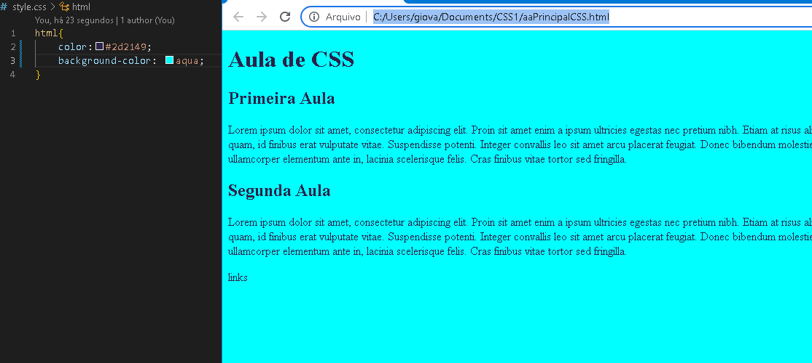
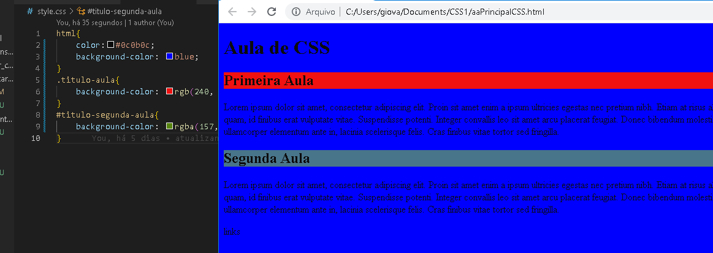
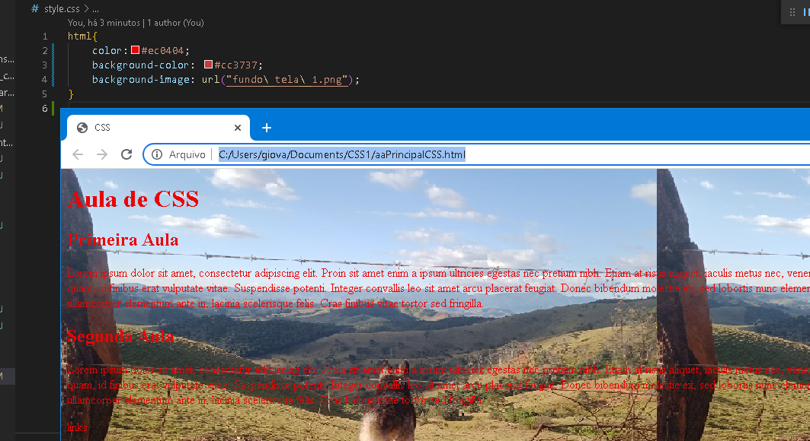
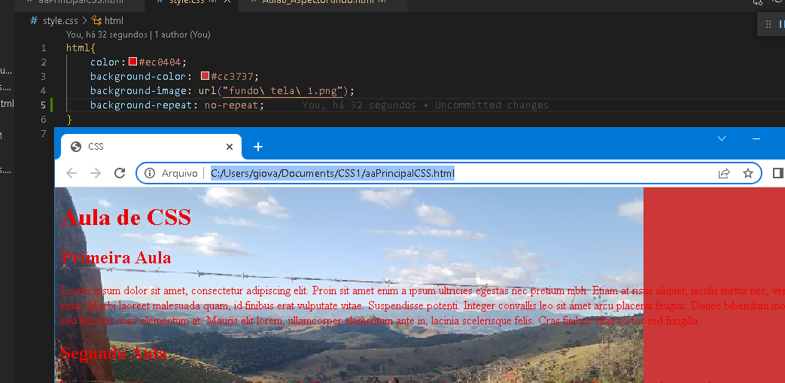
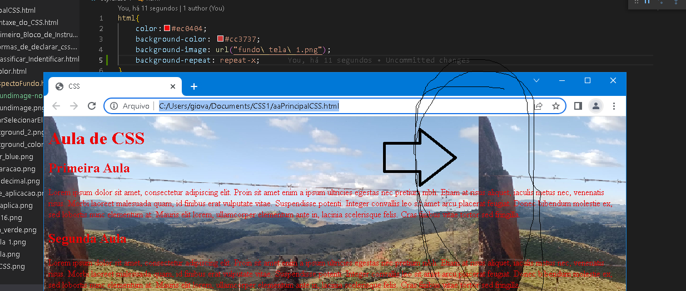
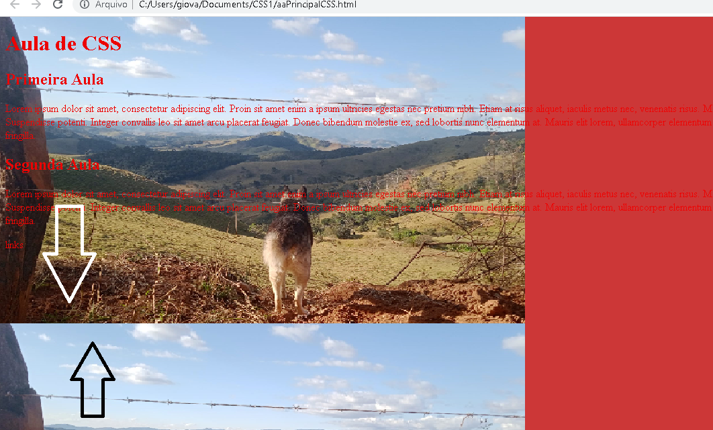
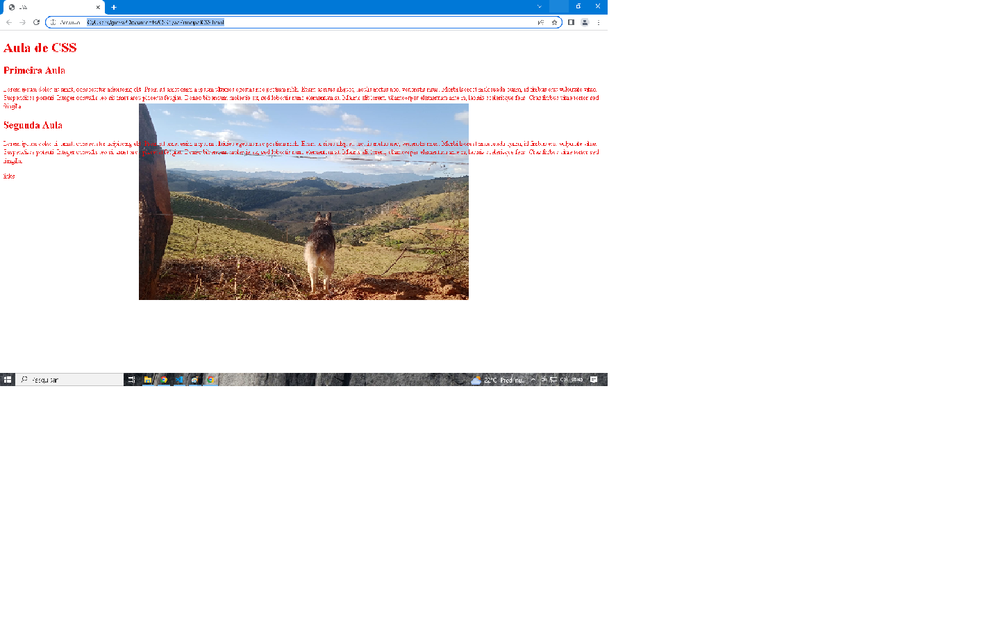
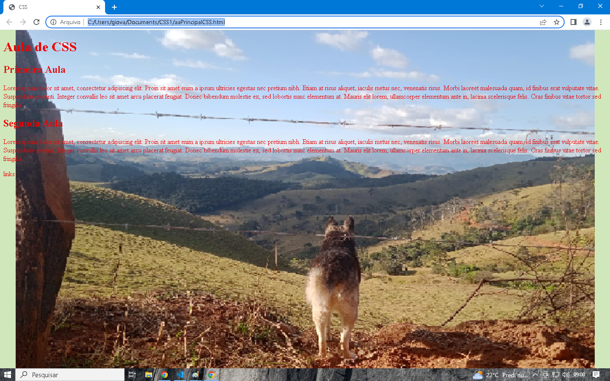

Pode definir o fundo do texto, colocando ou não imagens,etc.. .
Existe 5 propriedades de Fundo:
Background-color
Background-image
Background-repeat
Background-position
Background-size
Aparência do fundo do texto
Background-color
Defini a cor do fundo do texto
Pode usar as 3 formas de definir a cor do texto, para o fundo: Rgb, Rgba e Hexadecimal.
Exemplo de código:
html{
------color:#2d2149;
------background-color: aqua;
}
Como fica na página:

Pode ser usada de várias formas, para destacar o texto ou partes do texto.
Ex; Modificando partes diferentes da página e usando a forma de declarar as cores diferentes:

Background-
Defini uma imagem para o fundo da página
Cria um link, pág. "style.css", para carregar a imagem seja da pasta do projeto ou de outro lugar.
Quando coloca a imagem, o formato padrão:
Repeat = ligado ou seja se a imagem for pequena vai repetir ela na tela.
Position = começa no inicio da página do lado esquerdo.
Exemplo de código:
html{
------color:#ec0404;
------background-color: #cc3737;
------background-image: url("fundo\ tela\ 1.png");
}
Como fica na página:
Background-image Repeat
Defini a repetição da imagem do fundo
Possui duas propriedades com valores diferentes, para fazer as mudanças que você deseja
Background-repeat: no-repeat, repeat-x, repeat-y
Exemplo de código:
background-repeat: no-repeat;
Para não repetir a imagem
Como fica na página:
Background-image Repeat-x
Defini a repetição da imagem do fundo somente na linha x, ou seja, na horizontal
Exemplo de código:
background-repeat: repeat-x;
Repete a imagem, somente na horizontal
Como fica na página:
Background-image Repeat-y
Defini a repetição da imagem do fundo somente na linha y, ou seja, na Vertical
Exemplo de código:
background-repeat: repeat-y;
Repete a imagem, somente na vertical
Como fica na página:
Background-position
Defini a posiçao da imagem do fundo
Pode fazer várias mudanças, onde vai colocar a imagem
A imagem será repetida aparti da sua posiçao
Pode ser colocada, em todos os lados da tela.
Exemplo de código:
background-position: center;
A imagem fica no centro da páginta do site
Como fica na página:
Background-size Contain
Defini o tamanho da imagem do fundo
Contain = pega o menor lado da imagem e vai colocar do mesmo tamanho
Contain vai conter a imagem, sobra imagens na tela da página do site
Exemplo de código:
background-size: contain;
A imagem ficará contida
Como fica na página:
Background-size Couve
Defini o tamanho da imagem do fundo
Couve = ele pega o maior lado da imagem e coloca no mesmo elemento do contain
Vai expandir a a imagem pra ocupar todo espaço dentro do "elemento" onde ela foi colocada, aqui está sendo no "html"
Exemplo de código:
background-size: cover;
A imagem ocupará todo espaço do elemento